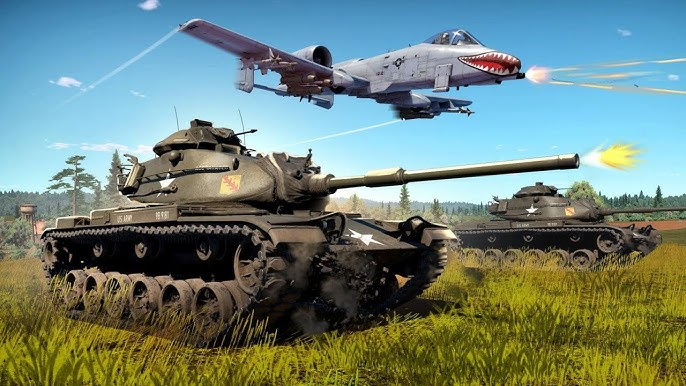

Why you should play warthunder
You can choose between pay to win or free to play. You can choose between spending a lot of money or play for free and grind. You can also IF you really want, "gamble" with opening crates. Theres a lot of different creates to open. You can ethier open for example creats where you can get tanks or creates where you can get In game money.
Theres a lot of creates see the picture below
War Thunder offers a huge variety of military vehicles, including planes, tanks, helicopters, and naval vessels. It spans multiple eras from World War II to modern day, so you can pilot classic WWII aircraft or modern jets, or command a variety of ground and naval units.
You can also play different countries that are in the game, that are the following:
United States, Germany, Russia, Britain, France, Japan, Italy, China, Sweden and Israel. Here are also the following Tech tree how it looks in each nation but now we are showcasing Germany's tech trees
Theres Two types of Boats fleets, Costal and Bluewater fleets
Costal Fleet
Bluewater fleet
For further info about tech trees you can use War Thunder offical website to know more about all the tech tree
The game is known for its detailed and realistic combat physics. Whether it's the handling of aircraft in dogfights or the impact physics of tanks, it gives a more realistic feel compared to many other games. If you enjoy tactical play, the game’s realistic battle modes will be a treat. The following video are:
Planes, Tanks and plane, Helicopters
Theres Two types of Boats fleets, Costal and Bluewater fleets
Costal Fleet
Bluewater fleet
War Thunder supports cross-platform play, so you can join battles with players on PC, PlayStation, and Xbox. It broadens the player base and allows you to play with friends regardless of their preferred platform
Now for some clips that i have from my experince
I don't have any real reason expect 3 things:
You can lose sanity when you get higher up in battle rank br
You might get anger issues
The last argument is just 2 clips enjoy: